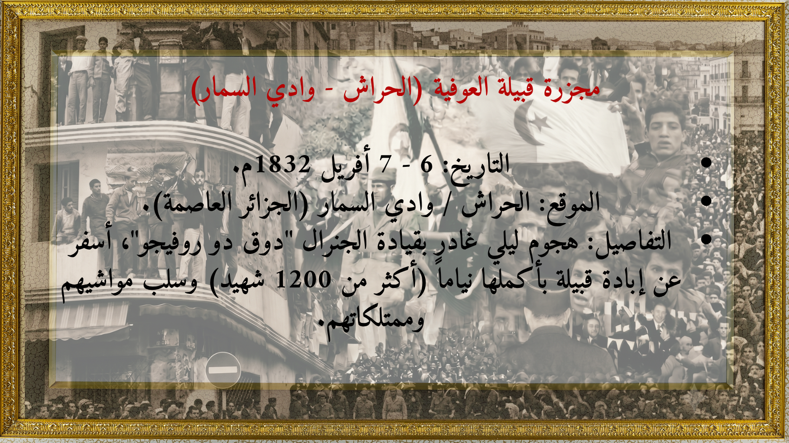

➜
العودة للرئيسية
السجل الأسود للجرائم الاستعمارية (1830م – 1962م)
مجازر ومحارق المحتل الفرنسي
🩸
شواهد حية على جرائم الإبادة، الأرض المحروقة، ومحارق الغيران في حق الشعب الجزائري الأعزل

سجل الإبادة التوثيقي
مجزرة قبيلة العوفية (الحراش 1832م)
اختر المحطة التوثيقية لعرض تفاصيل المجزرة:
01
قبيلة العوفية
6 - 7 أفريل 1832م
02
محرقة أولاد رياح
19 - 20 جوان 1845م
03
محرقة غار صبيح
12 أوت 1845م
04
واحة الزعاطشة
26 نوفمبر 1849م
05
مجزرة الأغواط
4 ديسمبر 1852م
06
مجزرة سطيف
8 ماي 1945م
07
مجزرة قالمة
8 ماي 1945م
08
مجزرة خراطة
8 ماي 1945م
09
ملعب سكيكدة
20 - 27 أوت 1955م
10
وادي الشولي
12 نوفمبر 1955م
11
مجازر سوق أهراس
أفريل - ماي 1958م
12
أولاد رابح (جيجل)
1958م
13
مخطط شال والتهجير
1959 – 1960م
14
تفجيرات رقان
13 فيفري 1960م
15
11 ديسمبر 1960
11 ديسمبر 1960م
16
مجزرة نهر السين
17 أكتوبر 1961م
17
إرهاب منظمة OAS
1961 – 1962م